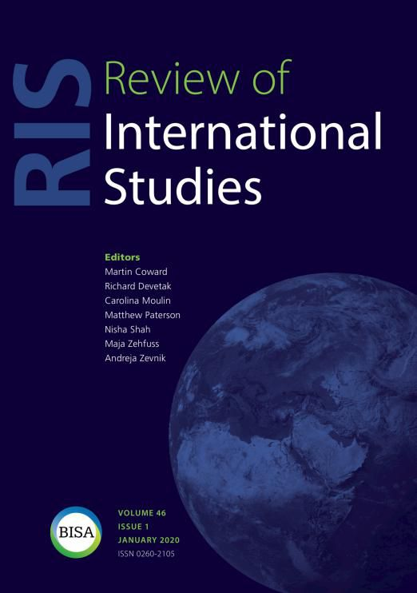

收录于合集
作品简介
【作者】 托马斯·格雷戈里（Thomas Gregory），奥克兰大学政治与国际关系讲师，研究兴趣包括战争伦理，女性主义理论，后建构主义，当代冲突等，目前主要的研究项目有关平民伤亡，非战斗人员豁免权和伤亡政治。
【编译】 阮含含（国政学人编译员，辽宁大学国际关系学院）
【校对】 朱文菡
【排版】 柯晗燕
【来源】
Gregory, T. (2020). The costs of war: Condolence payments and the politics of killing civilians. Review of International Studies, 46 (1), 156-176.
期刊简介 Review of International Studies （《国际研究评论》）是由剑桥大学出版社代表英国国际研究协会出版且同行评审的国际关系学术期刊，其前身为British Journal of International Studies(1975 - 1980) 。该期刊致力于反映全球政治的性质变化和新兴的政治挑战，旨在为国际社会搭建一个可供辩论的平台用以讨论当下紧迫的全球议题。2018年该期刊的影响因子为1.791。
战争的代价：慰问金和 残害 平民的政治
The costs of war: Condolence payments and the politics of killing civilians
Thomas Gregory
内容提要
驻阿富汗国际维和部队已经向阿富汗平民和伊拉克平民提供了5000多万美元的慰问金。这些慰问金的目的是表示同情，而不是承认错误，支付慰问金的方案本身也因武断、前后不一和对平民生命的估值过低而受到批评。本文关注的不是与慰问金相关的实际问题，也不是交战双方是否应该赔偿受害者的规范性争论，而是追溯支撑这一计划并影响其发展的战略必要性。随着联军认识到平民伤亡的战略成本，他们使用各种战术来减轻平民伤亡对军事行动成功的影响。本文认为，慰问金不应被视为一种人道主义姿态，旨在承认和回应普通平民的痛苦，而应将慰问金视为一个武器系统，旨在确保特定的军事目标。因此，本文提出，慰问金将继续物化和贬低阿富汗和伊拉克人的生命。因为提供慰问金本身就是联军达到目的的手段，而不是目的本身。
文章导读
一．导论
金钱是我在这场战争中最重要的武器。——彼得雷乌斯将军（General David Petraeus） 2015年10月3日，一架AC-130武装直升机向阿富汗昆都士省的一个医疗中心开火。第一枚炮弹击中大楼时是凌晨2点08分，据信当时大楼里有105名病人，包括几名政府军士兵和大约20名受伤的塔利班战士，同时现场还有150名工作人员。又过了三十分钟，飞行员们才得知他们击错了目标，原定目标是40米开外的塔利班控制的办公大楼。而期间，他们发射了大约211枚炮弹，造成42人死亡，包括14名工作人员和24名病人。经过确认，驻阿富汗国际维和部队（ISAF，以下简称联军）承认，由于人为失误、设备故障和高速操作，机组人员误将医院当成了袭击目标。16名机组人员受到纪律处分，并向受害者发放了170多笔慰问金，重伤患者可获得3 000美元，死者家属可获得6 000美元。在最近的战争中，这种慰问金机制已经变得越来越普遍。美国政府问责局（GAO）在2007年发布的一份报告指出，在2003年至2006年期间联军已经向阿富汗和伊拉克提供了2900万美元的慰问金和190万美元的补偿金。虽然支付了大量的金额，但让人惊讶的是关于慰问金在当代冲突中的作用的文献很少。当然，也有一些例外。艾米莉·吉尔伯特认为，“虽然货币支付可以缓解短期的经济需求，但缺乏法律追责是有问题的，因为它可能助长士兵逍遥法外的情况。”有其他学者则批评了这些政策的实施方式，冲突地区平民研究中心（CIVIC）认为其充满挑战，因为缺乏统一的政策，关于平民伤害的信息收集不足，对生命的估值偏低且不一致，以及缺乏对所有部门和各级单位有关付款的重要性、可得性和执行情况的培训。此外，还有越来越多的文献关注于交战方是否有义务向战争受害者提供赔偿的规范性问题。本文将从一个稍微不同的角度来看待这个问题，关注促使指挥官为达成使命而将金钱作为一种管理或减轻平民伤亡后果的工具的战略必要性。虽然笔者赞同慰问金只是重复了平民伤亡是附带损害的观点，即战争造成的悲惨但不可避免的副作用，但笔者认为，这些政策需要纳入联军对平民伤害这一现实不断变化的态度之中进行考量。随着阿富汗和伊拉克战局的发展，联军开始认识到保护平民免受伤亡，以及在平民伤亡时减轻这种伤害后果的战略重要性。因此，笔者认为，慰问金不仅模糊了当代冲突中的伤亡问题，而且它本身就是一种重要的战争武器。本文认为慰问金应该被视为一种可以为部队所用的战争武器，以帮助调整平民伤亡的不利后果,并确保他们不会在争夺人心的战斗中处于劣势。本文将首先简要概述不同类型的补偿方案,重要关注谁和什么可以补偿,可以提供的补偿数量,以及具体含义。第二部分将涉及现有的关于慰问金的研究。这些研究往往侧重于慰问金执行方面的实际问题，关于责任限度的道德和法律问题，或关于交战国是否应当赔偿被他们杀害的人的规范性问题。最后几节将概述支付这些款项的战略依据，追溯它们与阿富汗和伊拉克减轻平民伤亡的更广泛努力之间的关系。这些努力将慰问金定位为赢得人心的武器，而不是弥补造成的伤害的一种方式。笔者认为，慰问金将继续物化和贬低阿富汗人和伊拉克人的生命。因为提供这一款项本身就是联军达到目的的手段，而不是目的本身。
二． 补偿金和慰问金
虽然向平民支付的款项有显著的增加，但使用补偿和慰问金并不是什么新做法。1942年，慰问金机制在《外国索赔法》(FCA)中初步成型，该法案旨在“通过迅速解决有价值的索赔来促进和维持友好关系”。FCA提供了一种机制，通过这种机制，外国平民可以就涉及美国军事人员的疏忽、错误或犯罪行为所造成的损害提出索赔，但有一些问题妨碍了FCA向那些似乎有理由提出索赔的人提供充分赔偿。首先,FCA不包括已经宣布与敌军交战的情况下造成的后果,这意味着如果是在交火中被卷入或错误的被炸弹击中的平民不予以补偿,但如果是一个士兵意外发射他们的武器或参与道路交通事故造成的影响，他们则可能有资格获得补偿。第二，FCA包括“外国居民”的索赔要求，但不包括“不友好外国居民或被认为对美国不友好的个人”的索赔要求。最后，FCA并没有放弃主权豁免权，这意味着平民不能就他们所遭受的伤害起诉美国，也不能就任何判决提出上诉。如果他们不同意造成的伤害属于战斗排斥或认为受害者被错误地认为是对美国不友好的人，他们绝对没有上诉的权利。美国军方还可以使用其他两种机制来弥补平民伤亡——包括那些通常在战斗排除中免予赔偿的机制——但这些机制只允许酌情支付而不是正式赔偿。其中一种机制是抚恤金，可以作为“在战斗中由联盟或美军造成的死亡，伤害或财产损失的代币或名义上的支付”。另一种用来补偿平民伤害的机制是慰问金，旨在“表达对联军或美军在战斗期间造成的死亡、伤害或财产损失的同情”，而不是“承认法律责任或过错”。
三． 提供赔偿
根据赔偿阿富汗和伊拉克平民伤亡的不同机制，联军已经支付了巨额资金，但人们对这些计划的有效性以及这笔钱的管理方式仍存在许多忧虑。许多伊拉克人根本不知道慰问金的存在，而另一些人则因不在索赔处理地区或无法收集到必要的证据而不能获得这笔钱。即使这样，“举证的责任还是在伊拉克人身上，最终的决定是由美军指挥官做出的，没有上诉的余地”。尽管慰问金本来是作为一种同情的表达，但发放给受害者的金额却前后不一而且似乎很随意，再加上他们要越过冗长而复杂的官僚主义障碍，这意味着这些款项最终会疏远原本它们想要支持的人。必须指出的是，随着程序的成熟以及引入了新的策略，技术和程序，许多问题都得到了解决，但是现有文献中有很大一部分集中在与慰问金相关的实际问题上，并提供了一些技术解决方案。只能够解决其中的一些问题。同时在这方面的研究中，越来越多的工作集中在交战方是否有责任赔偿或提供某种形式的经济援助，以补偿他们受到的伤害。同时还有一部分学者关注关于补偿平民伤亡问题的规范性活动的问题。从现有文献来看，关于在阿富汗和伊拉克使用慰问金的讨论往往集中在实施这些特殊措施方面的实际问题，或者关于规范性的讨论，即交战方是否负有道德义务来赔偿平民在战场上受伤和死亡。但关于补偿平民伤亡的政治以及这些付款如何合理化，规范化和战场上杀害平民的借口方面的问题提及很少。与此同时，有关战略必要性的讨论相对较少，而这些战略必要性是联军决定补偿平民所受伤害的基础。
四． 减轻平民伤亡
如果我们不停止屠杀平民，我们就会输掉这场该死的战争。——麦克里斯特尔将军（General McChrystal） 在本文的其余部分中，笔者把对慰问金的日益依赖与对平民伤害的态度转变联系起来，因为联军开始放弃平民伤亡是军事行动附带的想法，并开始将平民伤亡重新想象为可能危及战略或影响整个任务成功的威胁。笔者指出，与其将慰问金视为补偿对平民造成的伤害的一种方式，不如将其视为旨在减轻平民伤亡后果的战争武器。女权主义地理学家艾米丽·吉尔伯特（Emily Gilbert）特别批判这种慰问金机制，她认为，这些慰问金是在表达同情，而不是承认法律责任或过失，表明军队不愿承担造成平民伤亡的责任，也没有在对其发动战争的方式上有任何改变。一方面，这些款项将慰问金的接受者拖到了道德经济的层面上，使他们对造成伤亡或杀害亲人的军队感到亏欠。另一方面，她认为拒绝接受对平民造成伤害的责任实际上可以通过加强阿富汗和伊拉克平民极易被杀害和极易被抛弃的观念而鼓励有罪不罚的文化。
实际上，在冲突的早期阶段，联军倾向于将平民伤亡视为一种附带损害，这是无意的，而且在很大程度上是军事行动成功的附带条件。随着阿富汗和伊拉克冲突的发展，联军似乎放弃了附带损害的措辞——造成平民伤亡是无意的，而且在很大程度上是战争的产物——并开始认识到平民伤亡的战略代价或后果。这种对平民伤害的态度变化（从将平民伤亡视为附带损害的形式转变为将平民伤亡视为战略性挫折），与反叛原则的复兴有关，这种反叛原则的复兴主要是为了赢得当地民众的关注，而不是通过战役击败敌方战斗人员。使用慰问金减轻平民伤害的行为表明联军已经充分意识到了平民伤害的战略成本。
五． 金钱是一种武器系统
每一个平民的死亡都会削弱我们的事业。——彼得雷乌斯将军（General Petraeus） 如前一节所示，联军不再把平民伤亡仅仅视为道德或法律上的关切，而是把它视为一个潜在的战略问题；减少或减轻平民伤亡现在被认为是军事需要。军方制定了新的交战规则以减少平民伤亡，但这些措施永远不会完全消除平民伤亡。因此，联军还采取了与后果管理有关的具体措施，包括围绕受伤平民的治疗或疏散、调查平民受伤指控的必要性、以及使用慰问金来平息受伤或失去亲人的平民的愤怒。阿富汗经验教训中心（CALL）出版的《阿富汗平民伤亡预防手册》讨论了减轻或管理平民伤害的战略后果的重要性。该手册指出，经验表明，“在处理平民伤害方面毫无作为……可以让一个村庄反对国际部队，使部队面临进一步报复的风险，并在国家和国际层面造成战略后果”。该手册将慰问金描述为“后果管理的一个关键要素”，并建议“各单位对这些款项执行完整的流程——从支付款项到如何跟踪他们支付了多少款项以及向谁支付”。同时联军就减少平民伤亡的重要性发布了新的理论指导，该指导认为，“将注意力集中在减少平民伤亡上是维持合法性和确保最终成功的一项重要投资”。虽然单位无法对平民伤亡提供补偿，但慰问金可以被用作“善意的姿态，作为补偿和表达关切的一部分”。报告建议，标准化支付可以减少“讨价还价和敌意”，但建议“定期审查这些支付，以确保它们在通胀或经营环境变化等经济变化的背景下仍然适用”。尽管慰问金的问题有目共睹，但将这些平民伤亡缓解措施制度化，可以被视为军事需要和人道主义关切的合二为一。然而，这种依靠慰问金的做法不应被视为道德的重大觉醒。之所以保护平民和减轻平民伤害是重要的，是因为它们被视为对特派团的成功具有战略重要性。与其将慰问金视为一种补偿形式或问责机制，不如将其视为一种战术或战争工具。联军对这些款项的评估出乎意料地坦率，称它们是一种武器——尽管不是致命武器——可以用来打击叛乱分子。将它们称为武器似乎有点过分，但值得注意的是，支配这些付款的标准操作程序称为“作为武器系统的货币”。如本节所示，慰问金从来没有打算作为一种补偿战争造成的损害的方式，而是被视为一种战争武器，可以用来减轻或管理平民伤亡的战略成本。笔者认为，这些付款不应被视为是对阿富汗和伊拉克平民所经历的痛苦和苦难做出反应的一种善意但有缺陷的尝试，因为这些付款从未真正涉及普通阿富汗人和伊拉克人的痛苦和苦难。这些款项的目的是为联军解决一个复杂的道德—政治困境提供一个简单的技术解决办法，一个可以用来对付平民伤亡对特派团效率可能造成有害影响的武器。因此，这些付款继续使阿富汗和伊拉克平民物化和贬值，把他们当作达到目的的手段，而不是他们的目的本身。在这些战争中被杀或受伤的平民没有被认为是人，但被视为一个潜在的问题，如果他们没有得到有效的管理，战略挫折可能危及整个任务的成功。因此，这些平民伤亡是“作为治理的对象产生的:既没有政治地位也没有发言权的东西”。
六． 结论
本文研究了慰问金作为战争武器的使用，该工具可用于管理或减轻平民伤亡的战略成本，这些伤亡可能有损联军行动的成功。慰问金付款的方式也许存在缺陷，但至少在某种程度上承认了对平民造成的伤害，并对因冲突而失去亲人和生计的人提供了一定的经济援助。然而，这些款项从来没有打算补偿受害者所遭受的痛苦和苦难，它往往是战争的进行方式。更令人不安的是支付这些费用所必需的军事要求，这些要求将平民伤亡视为一个战略问题，而不是道德或法律问题。乍一看，将平民伤亡定义为一个战略问题似乎是一个积极的进展，但这种做法的危险在于，在被认为具有战略重要性的条件下，在冲突中为平民提供的加强保护，将在这些人不被视为战略资产或阻碍军事行动成功的冲突中被放弃。当平民伤亡失去其战略意义时，这些加强的保护措施将很快失效，平民百姓将发现，即使是象征性地表示同情和微不足道的经济援助，也不会那么容易得到。无论这些措施看起来多么诱人，它们仍在物化和贬低平民，把它们当作达到目的的手段，而不是目的本身。它们不是针对作为人的平民，而是针对作为资产的平民在争夺人心的战斗中的作用。尽管在阿富汗和伊拉克拨付了巨额资金，但平民生死仍然是被任意支配且无足轻重的。
_ ** _ ** _ ** _
本文由国政学人独家编译推荐，文章观点不代表本平台观点，转载请联系授权。**__